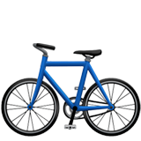
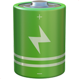

The usage of Citibike in Manhattan
Citibike is widely regarded as one of the primary public transportation choices that a significant number of New Yorkers rely on for their daily commutes. Its convenience and availability have made it a popular and practical mode of transportation, especially for short trips within the city.
Base on data between January and October 2023
How is the age proportion of Manhattan buildings distributed?
"Where are the station of citibike in Manhattan?"
There are 1,915 citibike stations in New York City in September 2023.
How about citibike users?
Most users use the citibike in downtown where most buildings are Commercial buildings with 1-10 floors and built in 1900s.
Number of used bicycle of each types

Classic Bikes: 175510

Electric Bikes: 16320
Number of used bicycle of each user types
Casual Users: 49095
Member Users: 142735
"How is access to Citibike in different zones?"
Access to Citibike services, including docking stations and amenities, differs by area, influencing the convenience and efficiency of the system for city commuters.
Select your zone